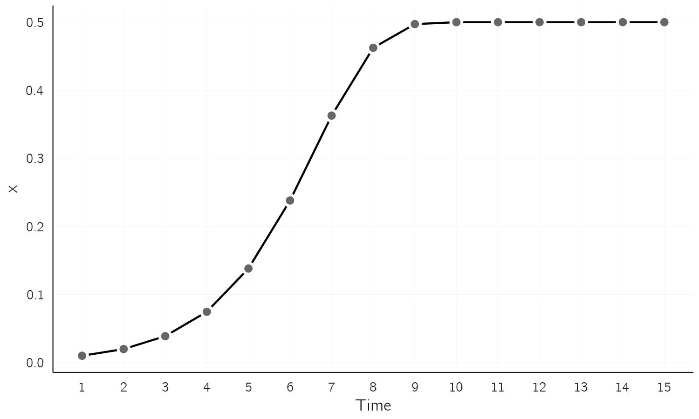
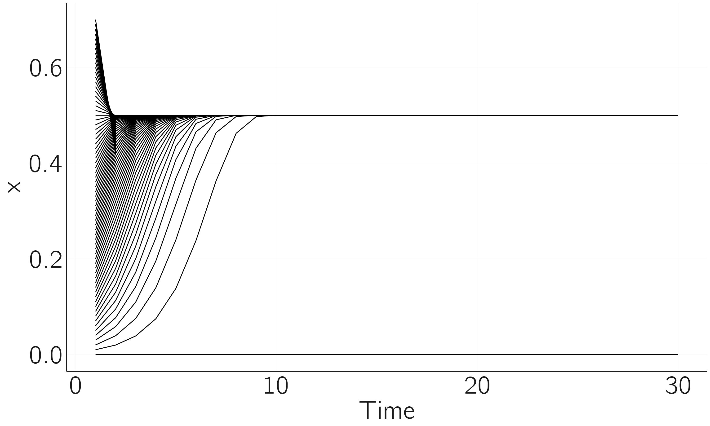
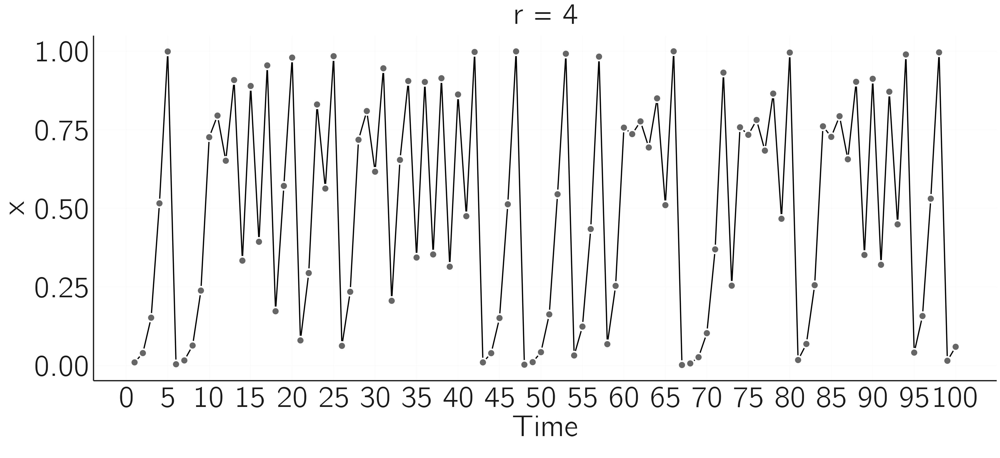
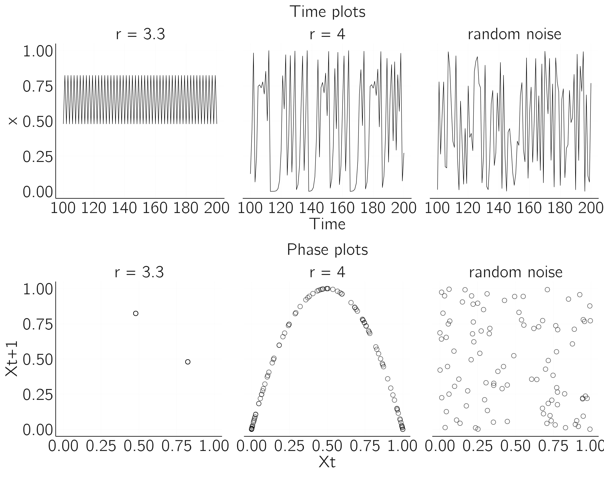
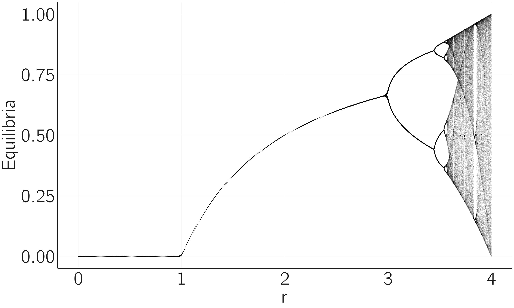

n <- 15
r <- 2
x <- rep(0,n)
x[1] <- 2 # initial state X0 = 1 and thus X1 = 2
for (i in 1:(n - 1))
x[i + 1] <- r * x[i]
plot(x, type = 'b', xlab = 'time', bty = 'n')2 Chaos and unpredictability
2.1 Introduction
Suppose we have immense amounts of genetic, biological and psychological data on millions of participants and knowledge of all relevant environmental factors. Suppose also that these huge amounts of data are of fantastic quality. Using state-of-the-art machine learning models and powerful computing resources, we could build advanced statistical models that include main and higher order interaction effects of all variables, even incorporating non-linear transformations. Even then, prediction may not be possible. The reason is a phenomenon called deterministic chaos.
Chaos is one of the most spectacular phenomena in complex systems and as psychologists we should know the basic results of chaos theory. It is also great fun to learn about chaos and it allows me to introduce many key concepts that we need in later chapters.
In my opinion, the applicability of chaos theory to psychology and social science is somewhat limited. For a long time, researchers have tried to show chaos in time series of psychophysiological measures, but this seems to be difficult. I will briefly review this work at the end of the chapter. The relevance of chaos theory may lie not in its application, but in its fundamental implication for prediction. What chaos theory basically shows is that even in the best of circumstances, where we have very accurate models and data, long-term prediction might be impossible. This is known as the butterfly effect: A butterfly flaps its wings in India and that tiny change in air pressure could eventually cause a tornado in Iowa. How this works will become clear in this chapter.
2.2 The population growth of rabbits
Chaos theory consists of many deep mathematical results, but understanding the basics of chaos is not so hard. Below I will explain chaos in difference equations at a very basic level of mathematics and programming. The elementary example is the famous logistic map, usually introduced as a model of population growth, for instance, of rabbits. Suppose we have rabbits on an island, and they start to multiply, what would be a mathematical model for such a process?
Population growth is a typical example of a dynamical system, it is a model of change. In general, in a dynamical system, the change or growth of a variable (say \(X\)) depends on the current state and some parameters. Time plays a very special role. We can use discrete or continuous time steps. In the first case, which is the focus of this chapter, we use difference equations; in the second case, we use differential equations. In the logistic map, time is discrete (population growth takes place in generations). The simplest model for the population growth of rabbits is:
\[ X_{t + 1} = rX_{t} \tag{2.1}\]
This simply says that the new value of \(X\) is determined by the previous value of \(X\). In this equation \(r\) is the growth rate. We can simulate this model by choosing a value for \(r\), \(r=2\), for instance. We also need an initial value, say \(X_{0} = 1.\) If this is completely new to you, enter some values repeatedly. You will see exponential growth (\(X_{1} = 2,\ X_{2} = 4,X_{3} = 8,X_{4} = 16,\ etc.)\). In R we can simulate this using a for loop (the result is shown in Figure 2.1).

Note that we can find any \(X_{t}\) given \(X_{0}\) by iterating the model as we do in the for loop. \(X_{t}\) is called the solution. Simulation is a bit odd in this case. We can compute the solution analytically. It is \(X_{t} = X_{0}r^{t}\). Thus for \(X_{15} = 1 \times 2^{15} = 32768\). However, for more complex models the analytical solution is often not available, and we have to use simulation (the numerical solution).
Note that the exponential model ignores the fact that population growth is limited by resources. At some point food will become scarce. One way of making the model, introduced by Verhulst in 1838, more realistic is to add a growth-limiting term:
\[ X_{t + 1} = f\left( X_{t} \right) = rX_{t}\left( 1 - \frac{X_{t}}{K} \right) \tag{2.2}\]
What is the effect of this addition to the equation? If \(X\) is much smaller than the resource \(K\) then the second term, \(\left( 1 - {X_{t}}/{K} \right),\) is close to 1 and we will see exponential growth. But as \(X\) approaches \(K\), this term becomes very small, reducing the effect of exponential growth. \(X\) does not actually grow up to \(K\), but to a lower value, if it converges at all. We are going to see this in a moment. It also turns out that the actual value of K is not of interest. Changing K does not change the qualitative behavior. Therefore, \(K\) is usually set to 1, scaling the population \(X\) between 0 and 1. The only remaining parameter is \(r\). Changing \(r\), however, leads to a number of surprising behaviors.1
2.3 Stable and unstable fixed points
Let us first study a simple ‘boring’ case, \(r = 2\) (Figure 2.2).
n <- 15; r <- 2; x <- rep(0,n)
x[1] <- .01 # initial state
for (i in 1:(n - 1))
x[i + 1] = r * x[i] * (1 - x[i])
plot(x, type = 'b', xlab = 'time', bty = 'n')
This is the simple case. The population initially develops exponentially but then levels off and reached a stable state at \(X = .5\). We need to understand a bit more about it. What you see here is that we have gone from an unstable initial state to a stable state, a point attractor. The next code shows that this point attractor attracts from a wide range of initial values, but not all.
n <- 30; r <- 2; x <- rep(0,n)
for (init in seq(0, .7, by = .01))
# start form different initials values
{
x[1] <- init
for (i in 1:(n - 1))
x[i + 1] <- r * x[i] * (1 - x[i])
if (x[i] == 0)
plot(x,type = 'l',xlab = 'time',bty = 'n',ylim = c(0, .8),col = 'red')
else
lines(x)
}If we start exactly at zero, \(X\) stays at zero. So, zero is an equilibrium too, but a special one. It is an unstable fixed point. A small perturbation will cause \(X\) to move to .5, the stable fixed point. All initial values in close proximity of 0 will move away from 0 (repellent), but if \(X = 0\) exactly, then it remains 0 for all time. So, \(X = 0\) is a fixed point but unstable (Figure 2.1).

This concept of equilibrium, stable or unstable, is crucial for later chapters. The essence of the next chapter is to change a control parameter, here \(r\), and study how the pattern of equilibria (the equilibrium landscape) changes. You can easily do this yourself by setting \(r = .9\). For \(r < 1\), there is only stable attractor (zero).
Simulating this is again not really necessary. One has to realize that a fixed point (\(X^{*}\)) is found when \(X_{t + 1} = X_{t} = X^{*}\). See for yourself that:
\[ \begin{gathered} X_{t + 1} = X_{t} = X^{*} \\ X^{*} = rX^{*}( 1 - X^{*}) \\ X^{*} = 0\ or\ 1 = r - rX^{*} \\ X^{*} = 0\ or\ X^{*} = \frac{r - 1}{r} \\ \end{gathered} \]
So 0 and \((r - 1)/r\) are fixed points. Indeed for \(r = 2\), we have seen that 0 and .5 are equilibria, one stable and one unstable. To determine whether fixed points are stable we look at the derivative of the function, \(f^{'}(x)\), which, as you can easily check, is \(r - 2rX\).
I will not explain why, however, the rule is that the fixed point is stable if the absolute value of the derivative in the fixed-point value is less than 1.2 For \(r = 2\) the fixed points are 0 and .5. \(\left| f^{'}\left( X^{*} = 0 \right) \right| = |2 - 0| = 2\), which is greater than 1 and thus \(X^{*} = 0\) is unstable. \(\left| f^{'}\left( X^{*} = .5 \right) \right| = |2 - 2 \times 2 \times .5| = 0\), which is less than 1 and thus \(X^{*} = .5\) is stable. You can check for yourself that \(X^{*}=(r - 1)/r\) is stable for \(1 < r < 3\), both with the r-code and with the absolute value of the derivative.
2.4 Limit cycles
So at \(r = 3\) the fixed point or \((r - 1)/r\) becomes unstable. Let’s study some cases. The plots in Figure 2.4 are made with the code for Figure 2.2.

For \(r = 2.9\) we see that the series converges to the fixed point \(\frac{1.9}{2.9} = .66,\) but in a process of over- and undershooting. Between \(r = 3.1\) and \(r = 3.3\) a limit cycle of period 2 arises. The population oscillates between two values. For \(r = 3.5\) this becomes even more remarkable, we see a limit cycle of period 4. For slightly larger values we could get cycles with even higher periods.
It has been claimed that these limit cycles occur in real population dynamics. Intuitively, it can be understood as a process of over- and undershooting, which dampens out for \(r\) a little below 3, but not for \(r > 3\).
2.5 Chaos
If we increase \(r\) even further, the doubling of the periods changes to even stranger behavior. Figure 2.4 shows what the time series looks for \(r = 4\).

There seems to be no regularity. This is what we call deterministic chaos. This time series is unpredictable, even though we know the equation, and the system is deterministic. What exactly do we mean by this? Let me illustrate.
r <- 4; n <- 50; x <- rep(0,n)
x[1] <- .001
for (i in 1:(n - 1))
x[i + 1] <- r * x[i] * (1 - x[i])
plot(x, type = 'l', xlab = 'time', bty = 'n')
x[1] <- .0010001
# restart with sightly different initial state
for (i in 1:(n - 1))
x[i + 1] <- r * x[i] * (1 - x[i])
lines(x, col = 'red')
We can see that a run with a slightly different initial value will at first follow the same path, but then it will diverge sharply (Figure 2.6). A tiny perturbation (the butterfly flapping its wings) propagates through the system and dramatically changes the long-term course of the system.
Note that some uncertainty about the exact value of the initial state is always inevitable. Suppose we have an equation like the logistic map for temperature in the weather system, and this equation perfectly describes that system. To make a prediction, we need to feed the current temperature into the computer. But we cannot measure temperature with infinite precision. And even if we could, we do not have a computer that can handle numbers with an infinite number of digits. So, we make a small error in setting the initial state, and this will always mess up our long-term forecast. This is why long-term weather will never be possible, even if we develop much more precise mathematical models, take more intensive and more accurate measurements and use more powerful computers. The weather turns out to be a chaotic system. Sensitivity to initial conditions is a necessary and perhaps sufficient condition for deterministic chaos. For a discussion on the definition of chaos, I refer to (Banks et al. 1992) and (Broer and Takens 2010).
The Lyapunov coefficient quantifies chaos. The idea is to take two very close initial conditions with a difference of \(\varepsilon\). In the next iteration this difference might be smaller, the same, or bigger. In the last case the time series diverge, which is typical for chaos. The Lyapunov coefficient is defined as:
\[ {\lambda_{L} = \lim_{n \rightarrow \infty}}{\frac{1}{n}}{\sum_{i}^{n}{\ln\left| f^{'}\left( X_{i} \right) \right|}} \tag{2.3}\]
where \(f^{'}\left( X_{i} \right) = r - 2rX_{i}\) for the logistic map and \(\lambda_{L} > 0\) indicates chaos. You may verify in a simulation that \(\lambda_{L} > 0\) for \(r = 4\), indicating chaos.
2.6 Phase plot and bifurcation diagrams
Equation 2.2 is very simple. It is just one equation, a deterministic difference equation specifying how \(X_{t + 1}\) depends on \(X_{t}\), but the variety of behavior is astonishing. One way to better understand its behavior is to use phase plots. A phase plot is a graphical representation of the relationship between two or more variables that change over time. In one-dimensional systems we plot \(X_{t}\) against \(X_{t + 1}\) (see Figure 2.7). The code for this figure is:
layout(matrix(1:6,2,3))
r <- 3.3; n <- 200; x <- rep(0,n)
x[1] <- .001
for(i in 1:(n-1)) x[i+1] = r*x[i]*(1-x[i])
x <- x[-1:-100]
plot(x,type='l',xlab='time',bty='n', main=paste('r = ',r),ylim=0:1,cex.main=2)
plot(x[-length(x)],x[-1],xlim=0:1,ylim=0:1,xlab='Xt',ylab='Xt+1',bty='n')
r <- 4; x[1] <- .001;
for(i in 1:(n-1)) x[i+1] <- r*x[i]*(1-x[i])
x <- x[-1:-100]
plot(x,type='l',xlab='time',bty='n',main=paste('r = ',r),cex.main=2)
plot(x[-length(x)],x[-1],xlim=0:1,ylim=0:1,xlab='Xt',ylab='Xt+1',bty='n')
x <- runif(200,0,1)
x <- x[-1:-100]
plot(x,type='l',xlab='time',bty='n',main='random noise',cex.main=2)
plot(x[-length(x)],x[-1],xlim=0:1,ylim=0:1,xlab='Xt',ylab='Xt+1',bty='n')
The top figures are time plots and lower figures are phase plots. The first column shows a limit cycle of period 2, the second deterministic chaos and the third noise generated from a uniform distribution. Although the time series of the second and third cases look similar, the phase diagram reveals hidden structure in the chaos time series. Phase plots can help us to distinguish chaos from noise.
The second useful graph is the bifurcation graph. It summarizes the behavior of the logistic map for different values of \(r\) in one figure. The idea is to plot the equilibria as y-values for a range of \(r\)-values on the \(x\)-axes. This means that if we take a low \(r\) value \((r < 1)\), we will only plot zero’s, as only \(X^{*} = 0\) is a stable fixed point. Between 1 and 3, we will also see one fixed point equal to \((r - 1)/r\). For \(r = 3.3\), we expect to see 2 points as the attractor is a limit cycle with period 2. For higher \(r\) we get chaos. How does this all look?
It is actually a good challenge to program this yourself. The trick is to create time series for a range of values of \(r\), delete the first part of this series (we only want the equilibrium behavior) and plot these as y values. So, if the logistic map has period two (\(r = 3.3\)), we repeatedly plot only two points. For \(r = 4\) we get the whole chaos band.
A clever way to do this is to use the sapply function in r.
layout(1)
f <- function(r, x, n, m){
x <- rep(x,n)
for(i in 1:(n-1)) x[i+1] <- r*x[i]*(1-x[i])
x[c((n-m):n)] # only return last m iterations
}
r.range <- seq(0, 2.5, by=0.01)
r.range <- c(r.range,seq(2.5, 4, by=0.001))
n <- 200; m <-100
equilibria <- as.vector(sapply(r.range, f, x=0.1, n=n, m=m-1))
r <- sort(rep(r.range, m))
plot(equilibria ~ r, pch=19,cex=.01,bty='n')This results in Figure 2.8. We see indeed fixed stable points for \(r < 3\), the period doubling of the limit cycles for \(r > 3\), followed by chaos.

A recurring phenomenon in many chaotic maps are fractals. Fractals are figures in which certain patterns reappear when we zoom in on the figure, and this happens again and again when we zoom in further. You can see this by zooming in on the interval of r between 3.83 and 3.86 (see exercise 2). The three equilibria in the limit cycle split again into period doubling cycles, as we saw in the overall plot between \(r\) in 3 and 3.5.
One famous result on this period doubling route to chaos is the Feigenbaum constant. The ratios of distances between consecutive period doubling points (e.g., the distance between first and second divided by the distance between the second and third point), converge to a value of approximately 4.6692. The amazing thing is that this happens for any unimodal map, not only the logistic map.
2.7 What did we learn
I find these results stunning. I note again that the generating function is deceptively simple, but its behavior is utterly complex and beautiful to me. Mathematicians have studied every detail of these plots and most of it is beyond my comprehension. The Wikipedia on the logistic map will introduce you to some more advanced concepts, but for our purposes the present introduction will suffice.
Actually, it is good to realize which concepts we have already learned. The first is the concept of equilibrium. The states of dynamical systems tend to converge to certain values. The simplest of these is the fixed point. Fixed points can be stable or unstable (more on this in the next chapter). If we start a system exactly at its unstable fixed point (and there is no noise in the system), it will stay there. But any small perturbation will cause it to escape and move to the fixed stable point.
The bifurcation diagram summarizes this behavior and also shows how the equilibria change when a control parameter changes. For example, at \(r = 1\) we see a bifurcation in the logistic map. Initially 0 was the stable fixed point and \((r\ - 1)/r\) was unstable. At \(r = 1\) this is reversed. At \(r = 3\) we see another bifurcation when limit cycles appear.
We have learnt that there are all sorts of equilibria. The strangest ones are called strange attractors, which are associated with deterministic chaos. You can see them by making a phase diagram. Phase diagrams for other famous maps are often stunning. The most famous is the Mandelbrot set (look on the internet). There is an R-blog about the Mandelbrot set. I recommend you check it out. Simulation helps understanding!
The last thing we learned is that even if our world were deterministic (it is not!), and we knew all the laws of motion (say, the logistic map), and knew initial states with enormous precision, the world is unpredictable.
This statement needs some nuance. I have already mentioned that the weather can be chaotic and unpredictable. But the weather is not always so unpredictable. Sometimes longer forecasts are possible. But forecasts beyond, say, 10 days seem out of reach. We also see in the logistic map that when \(r\) is close to 4, the forecast suffers from the butterfly effect, but for \(r = 2\) the time course is very predictable, even more predictable than in many linear systems. This is because there is only one stable fixed point (.5). The initial state does not matter, we always end up at .5! So the logistic map is either extremely predictable or extremely unpredictable depending on the value of \(r\).
2.8 Other maps and fractals
There are many accessible sources on chaos theory. As always, Wikipedia is a great resource. It helps me a lot by actually doing things, i.e., doing computer simulations. One example is the Henon map, which consists of two coupled difference equations:
\[ \begin{gathered} X_{t + 1} = 1 - aX_{t}^{2} + Y_{t} \\ Y_{t + 1} = bX_{t} \end{gathered} \tag{2.4}\]
Using the code example from the logistic map, you should be able to generate time series and a phase diagram for this model. Try to reproduce the first image on the Henon map Wikipedia page. The amazing three-dimensional bifurcation diagram may be more challenging.
Fractals are another topic for further study. Another look at Wikipedia is recommended. Making your own fractals in R is made easy by the R blog by Martin Stefan (2020).
2.9 Detecting chaos in psychophysiological data
Chaos theory and the logistic map were popularized about 50 years ago, and since then researchers have been looking for chaos in all kinds of time series (Ayers 1997; Robertson and Combs 2014; Schiepek et al. 2017). One idea behind this work is the hypothesis that chaos might be healthy (Pool 1989) or be helpful. It would be helpful in learning algorithms, such as neutral networks, to prevent getting stuck in local minima (Bertschinger and Natschläger 2004). My very first publication was about chaos in neural networks (van der Maas, Verschure, and Molenaar 1990).
There exist many techniques for chaos detection in times series. This is all but easy because these empirical signals are inevitably contaminated with noise (Rosso et al. 2007). One example is the computation of Lyapunov exponents, quantifying how small differences in initial conditions evolve over time. A positive Lyapunov exponent indicates chaos, signifying exponential divergence of trajectories, which is a hallmark of chaotic systems. This method involves reconstructing the phase space from time series data and calculating the average exponential rate of separation of trajectories. With the Lyapunov function in the package DChaos you can compute the Lyapunov coefficient for times series generated with the logistic map. You may verify that for \(r = 4\) you get the Lyapunov coefficient as computed with the derivative earlier.
Chaos detection is an active area of research, with new methods being proposed on a regular basis (Zanin 2022). There are several packages available in R, including new methods based on machine learning techniques (Sandubete and Escot 2021; Toker, Sommer, and D’Esposito 2020).
These methods generally require long time series. Many publications appeared on the detection of chaos in psychophysiological data. Examples are EEG (Pritchard and Duke 1992) heart beat (Freitas et al. 2009), EMG (Lei, Wang, and Feng 2001) and eye movements (Harezlak and Kasprowski 2018). Reviews of these lines of research are provided by Stam (2005), Kargarnovin et al. (2023) and Garc and Pe (2015).
2.10 Exercises
For \(r=3.5\), the logistic map iterates between four points. For which value(s) does it iterate between 8 points? (*)
In Section 2.6 the code to make a bifurcation plot is shown. First, run this code and take a look at the bifurcation plot. In this plot, you can also zoom in by changing the interval between the \(r\)’s on the x-axis. Adjust the code by changing the r.range to seq(3.4, 4, by=0.0001)), also change ‘cex = 0.01’ to a lower value. Zoom in on the interval of \(r\) between 3.83 and 3.86. In this interval the chaos suddenly disappears and limit cycles with period 3 appear. Check this with a time series plot for a particular value of \(r\). (*)
Reproduce the first image from the Henon map Wikipedia page. Provide your R-code and figure (*).
Make the bifurcation diagram of the Ricker model (see Wikipedia). Provide your R-code and figure. Why is this model considered a more realistic representation of population growth than the logistic map?
Also reproduce the three-dimensional bifurcation diagram of the Henon map (**).
Have a look at the definition of the Lyapunov coefficient in Section 2.5. Calculate this Lyapunov coefficient for the logistic map where \(r = 4\) using the Dchaos package in R. This coefficient can also be calculated manually using the derivative (Equation 2.3). Do this and check that the coefficients are approximately equal.
Use the Rmusic library (installed with
devtools::install_github("keithmcnulty/Rmusic", build_vignettes = TRUE)) to create a chaos sound machine. Make one for white noise too. Can you hear the difference? (**)Find a paper on chaos detection in psychology or psychophysiology and summarize it in 300-400 words (*).
Verhulst proposed this model in the form of a differential equation in continuous time. We will discuss this type of model in Chapter 4. In continuous time, nothing particularly spectacular happens and we only see the kind of behavior displayed in Figure 2.2.↩︎
Why this is, is not too difficult to understand. If you google ‘fixed points of difference equations’, you will quickly arrive at stackexchange.com, where several insightful explanations are given.↩︎